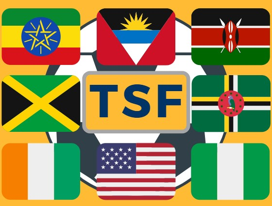

<mat-toolbar class="custom-toolbar" [ngClass]="{'custom-toolbar-web': (isHandset$ | async) === false}" color="primary">
    
    <span [ngStyle]="{'padding': (isHandset$ | async) ? '10px':'30px'}"></span>
    <span style="color: #036;">The Soccer Family</span>
</mat-toolbar>